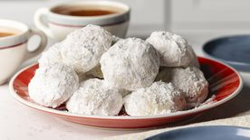

Double Chocolate Cookies
Origin:
Michigan
Source:
Family Recipe
Category:
Dessert

My daughter learned to make these cookies at a baking camp at Zingermanns and has tweaked the recipe to fit the taste buds of her siblings. They are extremely sugary so the salt helps to balance it. Note, these cookies are best eaten very quickly.
Recipe Ingredients
- Unsalted butter
- Granulated Sugar
- Packed light or dark brown sugar
- Large egg
- Pure vanilla extract
- Semi-sweet chocolate chunks (melted)
- All-purpose flour
- Natural unsweetened cocoa powder
- Baking soda
- Salt
- Semi-sweet chocolate chunks
Recipe Steps
- In a mixing bowl cream together the butter, granulated sugar, and brown sugar
- Add the egg and vanilla extract and beat well
- Add the melted chocolate
- In a separate bowl combine the flour, baking soda, cocoa powder and salt
- Combine the wet and dry ingredients
- Add the unmelted chocolate chunks.
- Form 15 cookies and place on a baking sheet.
- Cook for 12 to 13 minutes at 350 degrees.
Additional Food Images


Colleen van Lent
Chocolate Chip Banana Bread
Origin:
American
Source:
RecipeCategory:
Dessert

This is a tried-and-tested recipe that I have used numerous times for making the perfect chocolate chip banana bread! Not only does it help utilize the bananas that have slowly overripened at the back of the fridge, it ends up creating an incredibly delicious, and relatively healthy, dessert.
Recipe Ingredients
- Cooking spray
- 2 cups (240 g) all-purpose flour
- 1 tsp. baking soda
- 1/2 tsp. kosher salt
- 1 large egg plus 1 egg yolk
- 1 cup (200 g) granulated sugar
- 1/2 cup (1 stick) unsalted butter, melted
- 1 tsp. pure vanilla extract
- 3 ripe bananas, mashed
- 1/2 cup chopped toasted walnuts
- 1/2 cup semisweet chocolate chips
Recipe Steps
- Preheat the oven to 350º. Line a 9"-by-5" loaf pan with parchment and grease with cooking spray.
- In a medium bowl, whisk flour, baking soda, and salt.
- In a large bowl, mix egg, egg yolk, granulated sugar, butter, sour cream, and vanilla. Add bananas and stir until combined. Gradually add dry ingredients to banana mixture until just combined.
- Fold in walnuts and chocolate chips and transfer to prepared pan.
- Bake bread until a tester inserted into the center comes out clean, about 1 hour. Let cool 10 minutes in pan, then invert onto a wire rack and let cool completely.
Additional Food Images


Ibrahim Moazzam & Memuna Tariq
Russian Tea Cakes
Origin:
Russia
Source:
RecipeCategory:
Dessert
During the Christmas season, my family bakes a ton of Russian Tea Cakes. These are delicious, tiny cookies that are perfect with a warm cup of hot chocolate. Nuts are optional, depending on your preference.
Recipe Ingredients
- 1 cup butter, softened
- 1/2 cup powdered sugar
- 1 teaspoon vanilla
- 2 1/4 cups all-purpose flour
- 3/4 cups finely chopped nuts
- 1/4 teaspoon salt
- Powdered sugar
Recipe Steps
- Heat oven to 400 degrees F.
- Mix butter, 1/2 cup powdered sugar and the vanilla in large bowl. Stir in flour, nuts and salt until dough holds together.
- Shape dough into 1-inch balls. Place about 1 inch apart on ungreased cookie sheet.
- Bake 10 to 12 minutes or until set but not brown. Remove from cookie sheet. Cool slightly on wire rack.
- Roll warm cookies in powdered sugar; cool on wire rack. Roll in powdered sugar again.
Additional Food Images

Violet Ruiz